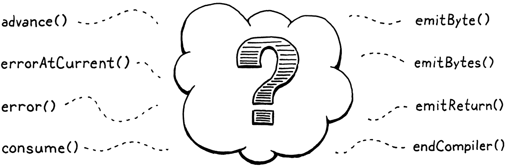

编译表达式
在我们人生旅途的中途，我发现自己置身于一片漆黑的树林中，那里已经迷失了正路。
-- Dante Alighieri,Inferno
这一章令人兴奋的原因不是一个，也不是两个，而是三个。首先，它提供了我们 VM 执行管道的最后一部分。一旦到位，我们就可以从扫描一直到执行它的过程中探测用户的源代码。

其次，我们开始编写一个真正的、诚实的编译器。它解析源代码并输出一系列低级二进制指令。当然，它是字节码而不是某些芯片的本机指令集，但它比 jlox 更接近机器码。我们即将成为真正的语言黑客。
字节码对 Niklaus Wirth 来说已经足够好了，没有人质疑他的街头信誉。
第三，也是最后，我要向您展示我最喜欢的算法之一：Vaughan Pratt 的“自上而下的运算符优先级解析”。这是我所知道的解析表达式的最优雅的方式。它可以优雅地处理前缀运算符、后缀、中缀、mixfix以及您获得的任何类型的-fix 。它毫不费力地处理优先级和关联性。我喜欢它。
Pratt 解析器是行业中的一种口头传统。我读过的编译器或语言书籍都没有教过他们。学术界非常关注生成的解析器，而 Pratt 的技术是针对手写的，因此被忽视了。
但是在生产编译器中，手动解析器很常见，你会惊讶有多少人知道它。问他们是从哪里学来的，他们总是说，“哦，我几年前研究过这个编译器，我的同事说他们是从这个旧的前端学来的..."。
像往常一样，在开始有趣的事情之前，需要做一些准备工作。在吃甜点之前，你必须先吃蔬菜。首先，让我们放弃为测试扫描器而编写的临时脚手架，并用更有用的东西取而代之。
InterpretResult interpret(const char* source) {
Chunk chunk;
initChunk(&chunk);
if (!compile(source, &chunk)) {
freeChunk(&chunk);
return INTERPRET_COMPILE_ERROR;
}
vm.chunk = &chunk;
vm.ip = vm.chunk->code;
InterpretResult result = run();
freeChunk(&chunk);
return result;
}
// vm.c, in interpret(), replace 2 lines
我们创建一个新的chunk并将其传递给编译器。编译器将获取用户的程序并用字节码填充chunk。至少，如果程序没有任何编译错误，它就会这样做。如果确实遇到错误，则compile()返回false并且丢弃不可用的chunk。
否则，将完成的chunk发送到 VM 以执行。当 VM 完成时，释放chunk，就完成了。如您所见，现在的compile()签名不同了。
#define clox_compiler_h
#include "vm.h"
bool compile(const char* source, Chunk* chunk);
#endif
// compiler.h, replace 1 line
我们传入编译器将写入代码的块，然后compile()返回是否编译成功。在实现中对签名进行了相同的更改。
#include "scanner.h"
bool compile(const char* source, Chunk* chunk) {
initScanner(source);
// compiler.c, function compile(), replace 1 line
对initScanner()调用是本章唯一幸存下来的代码行。删除我们为测试扫描器而编写的临时代码，并将其替换为以下三行：
initScanner(source);
advance();
expression();
consume(TOKEN_EOF, "Expect end of expression.");
}
// compiler.c, in compile(), replace 13 lines
调用advance()启动扫描器。我们很快就会看到它的作用。然后解析一个表达式。我们还没有语句，所以这是我们支持的语法的唯一子集。当我们在几章中添加语句时，将重新讨论这一点。在编译表达式之后，应该在源代码的末尾，所以检查哨兵 EOF 标记。
我们将用本章的其余部分来使这个函数起作用，尤其是那个小expression()调用。通常，会直接深入到该函数定义中，并从上到下完成实现。
这一章不一样。Pratt 的解析技术非常简单，一旦您将其全部加载到您的脑海中，但分解成小的片段就有点棘手。当然，它是递归的，这是问题的一部分。它也依赖于一个大数据表。当构建算法时，该表会增加额外的列。
如果本章不合您的胃口，并且您希望从另一个角度理解这些概念，我写了一篇文章，教授相同的算法，但使用 Java 和面向对象的风格：“Pratt Parsing：让表达式解析变得简单”。
我不想每次扩展表格时都重新访问 40 多行代码。因此，我们将从外部进入解析器的核心，并在到达多汁的中心之前覆盖所有周围的部分。与大多数章节相比，这将需要更多的耐心和脑力存储空间，但这是我能做的最好的。
17.1 单趟编译 Single-pass Compilation
编译器大致有两个工作。它解析用户的源代码以了解其含义。然后它获取这些知识并输出产生相同语义的低级指令。许多语言在实现中将这两个角色分成两个单独的阶段。解析器生成AST——就像 jlox 所做的那样——然后代码生成器遍历 AST 并输出目标代码。
事实上，大多数复杂的优化编译器都不止两次遍历。不仅要确定优化传递有哪些，还要确定如何命令它们从编译器中获得最大性能——因为优化通常以复杂的方式相互作用——介于“开放研究领域”和“黑暗艺术”之间。
在 clox 中，我们采用了一种老派的方法，将这两趟合并为一趟。过去，语言黑客之所以这样做，是因为计算机实际上没有足够的内存来存储整个源文件的 AST。我们这样做是因为它使我们的编译器更简单，这在用 C 编程时是一项真正的优势。
像我们要构建的单趟编译器并不适用于所有语言。由于编译器在生成代码时只能窥视用户的程序，因此语言的设计必须使您不需要太多周围的上下文来理解一段语法。幸运的是，微型、动态类型的 Lox非常适合这种情况。
并不是说这应该让人感到意外。毕竟我确实专门为这本书设计了语言。

这实际上意味着我们的“编译器”C 模块具有您将从 jlox 中识别的用于解析的功能——使用token、匹配预期的token类型等。它还具有代码生成功能——发出字节码并将常量添加到目标块。（这意味着我将在本章和后面的章节中交替使用“解析”和“编译”。）
我们将首先构建解析和代码生成部分。然后我们将它们与中间的代码拼接在一起，中间使用 Pratt 的技术来解析 Lox 的特定语法并输出正确的字节码。
17.2 解析tokens
首先，编译器的前半部分。这个函数的名字应该听起来很熟悉。
#include "scanner.h"
static void advance() {
parser.previous = parser.current;
for (;;) {
parser.current = scanToken();
if (parser.current.type != TOKEN_ERROR) break;
errorAtCurrent(parser.current.start);
}
}
// compiler.c
就像在 jlox 中一样，它沿着token流向前推进。它向扫描器询问下一个token并将其保存以备后用。在此之前，它会获取旧current token并将其存储在一个previous字段中。这稍后会派上用场，这样我们就可以在匹配token后获取词素。
读取下一个token的代码包含在一个循环中。请记住，clox 的扫描器不会报告词法错误。相反，它创建特殊的错误标记并将其留给解析器来报告它们。我们在这里这样做。
不断循环，读取token并报告错误，直到遇到一个非错误的或到达终点。这样，解析器的其余部分只会看到有效的token。当前和之前的token存储在这个结构中：
#include "scanner.h"
typedef struct {
Token current;
Token previous;
} Parser;
Parser parser;
static void advance() {
// compiler.c
就像我们在其他模块中所做的那样，有一个这种结构类型的全局变量，因此我们不需要在编译器中将状态从一个函数传递到另一个函数。
17.2.1 处理语法错误
如果扫描器给我们一个错误token，我们需要告诉用户。使用这个会发生这种情况：
static void errorAtCurrent(const char* message) {
errorAt(&parser.current, message);
}
// compiler.c, add after variable parser
我们从当前token中提取位置，以便告诉用户错误发生的位置并将其转发给errorAt()。更常见的是，会在刚刚使用的token位置报告错误，因此我们为这个其他函数提供更短的名称：
static void error(const char* message) {
errorAt(&parser.previous, message);
}
// compiler.c, add after variable parser
实际工作发生在这里：
static void errorAt(Token* token, const char* message) {
fprintf(stderr, "[line %d] Error", token->line);
if (token->type == TOKEN_EOF) {
fprintf(stderr, " at end");
} else if (token->type == TOKEN_ERROR) {
// Nothing.
} else {
fprintf(stderr, " at '%.*s'", token->length, token->start);
}
fprintf(stderr, ": %s\n", message);
parser.hadError = true;
}
// compiler.c, add after variable parser
首先，我们打印错误发生的地方。如果它是人类可读的，我们会尝试显示词素。然后打印错误信息本身。之后，我们设置这个hadError标志。记录编译过程中是否出现错误。该字段也存在于解析器结构中。
Token previous;
bool hadError;
} Parser;
// compiler.c, in struct Parser
早些时候我说过如果发生错误compile()应该返回false。现在我们可以让它做到这一点。
consume(TOKEN_EOF, "Expect end of expression.");
return !parser.hadError;
}
// compiler.c, in compile()
还有另一个标志要用于错误处理。我们想避免错误级联。如果用户在他们的代码中有错误并且解析器对它在语法中的位置感到困惑，我们不希望它在第一个错误之后喷出一大堆无意义的连锁错误。
在 jlox 中我们使用恐慌模式错误恢复修复了该问题。在 Java 解释器中，我们抛出一个异常以从所有解析器代码中展开到可以跳过token并重新同步。在 C 中没有异常机制。作为替代，我们添加一个标志来跟踪当前是否处于恐慌模式。
有
setjmp()和longjmp()，但我不想去那里。这些使得内存泄漏、忘记维护不变量或以其他方式度过非常糟糕的一天变得太容易了。
bool hadError;
bool panicMode;
} Parser;
// compiler.c, in struct Parser
当发生错误时，我们设置它。
static void errorAt(Token* token, const char* message) {
parser.panicMode = true;
fprintf(stderr, "[line %d] Error", token->line);
// compiler.c, in errorAt()
之后，继续正常编译，就好像错误从未发生过一样。字节码永远不会被执行，所以继续是无害的。诀窍是，当设置了恐慌模式标志时，我们只是简单地抑制检测到的任何其他错误。
static void errorAt(Token* token, const char* message) {
if (parser.panicMode) return;
parser.panicMode = true;
// compiler.c, in errorAt()
解析器很可能会在杂草中消失，但用户不会知道，因为错误都被吞没了。当解析器到达同步点时，恐慌模式结束。对于 Lox，我们选择了语句边界，因此当我们稍后将它们添加到编译器时，我们将清除那里的标志。
这些新字段需要初始化。
initScanner(source);
parser.hadError = false;
parser.panicMode = false;
advance();
// compiler.c, in compile()
为了显示错误，我们需要一个标准库头文件stdlib.h。
#include <stdio.h>
#include <stdlib.h>
#include "common.h"
// compiler.c
最后一个解析函数，来自 jlox 的另一个老朋友。
static void consume(TokenType type, const char* message) {
if (parser.current.type == type) {
advance();
return;
}
errorAtCurrent(message);
}
// compiler.c, add after advance()
它类似于advance()读取下一个令牌。但它也验证token是否具有预期的类型。如果没有，它会报告错误。这个函数是编译器中大多数语法错误的基础。
好的，现在前端完成的差不多了。
17.3 发射字节码
在我们解析并理解一段用户程序之后，下一步就是将其翻译成一系列字节码指令。它从最简单的步骤开始：将单个字节附加到块中。
static void emitByte(uint8_t byte) {
writeChunk(currentChunk(), byte, parser.previous.line);
}
// compiler.c, add after consume()
很难相信伟大的事情会调用这样一个简单的函数。它写入给定字节，该字节可能是指令的操作码或操作数。它发送前一个token的行信息，以便运行时错误与该行相关联。
正在被写入的Chunk需要传递给compile()，但它先需要传给emitByte()。为此，我们依赖于这个中介函数：
Parser parser;
Chunk* compilingChunk;
static Chunk* currentChunk() {
return compilingChunk;
}
static void errorAt(Token* token, const char* message) {
// compiler.c, add after variable parser
现在，Chunk指针存储在模块级变量中，就像我们存储其他全局状态一样。后边，当我们开始编译用户定义的函数时，“current chunk”的概念变得更加复杂。为了避免返回并更改大量代码，我将该逻辑封装在currentChunk()函数中。
我们在编写任何字节码之前初始化这个新的模块变量：
bool compile(const char* source, Chunk* chunk) {
initScanner(source);
compilingChunk = chunk;
parser.hadError = false;
// compiler.c, in compile()
然后，在最后，当完成块的编译时，把一起都结束。
consume(TOKEN_EOF, "Expect end of expression.");
endCompiler();
return !parser.hadError;
// compiler.c, in compile()
这就是所谓的：
static void endCompiler() {
emitReturn();
}
// compiler.c, add after emitByte()
在本章中，虚拟机只处理表达式。当您运行 clox 时，它将解析、编译和执行单个表达式，然后打印结果。要打印该值，我们暂时使用该OP_RETURN指令。所以我们让编译器将其中一个添加到块的末尾。
static void emitReturn() {
emitByte(OP_RETURN);
}
// compiler.c, add after emitByte()
当我们在后端时，我们不妨让我们的生活更轻松。
static void emitBytes(uint8_t byte1, uint8_t byte2) {
emitByte(byte1);
emitByte(byte2);
}
// compiler.c, add after emitByte()
随着时间的推移，我们将有足够多的情况需要写入一个操作码，后跟一个单字节操作数，因此值得定义这个方便的函数。
17.4 解析前缀表达式
我们已经组装了解析和代码生成实用程序函数。缺少的部分是中间将它们连接在一起的代码。

要compile() 中剩下的唯一需要实现的是这个函数：
static void expression() {
// What goes here?
}
// compiler.c, add after endCompiler()
我们还没有准备好在 Lox 中实现每一种表达式。呀，我们甚至没有布尔值。对于本章，我们只需要担心四个：
- 数字 ：
123 - 分组括号：
(123) - 一元取反：
-123 - 算术 ：
+,-,*,/
当通过函数来编译每一种表达式时，我们通过table-driven的解析器来完成这个功能。
17.4.1 解析token
现在，让我们关注 Lox 表达式，每个表达式都只是一个token。在本章中，这只是数字，但稍后会有更多内容。以下是如何编译它们：
将每个token类型映射到不同类型的表达式。为每个输出适当字节码的表达式定义一个函数。然后构建一个函数指针数组。数组中的索引对应于TokenType枚举值，每个索引处的函数是编译该token类型的表达式的代码。
为了编译数字，将指向以下函数的指针存储在数组的TOKEN_NUMBER索引处。
static void number() {
double value = strtod(parser.previous.start, NULL);
emitConstant(value);
}
// compiler.c, add after endCompiler()
假设数字的token已经被消费并存储在previous中.我们获取该词素并使用 C 标准库将其转换为双精度值。然后使用此函数生成加载该值的代码：
static void emitConstant(Value value) {
emitBytes(OP_CONSTANT, makeConstant(value));
}
// compiler.c, add after emitReturn()
首先，我们将值添加到常量表，然后发出一条OP_CONSTANT指令，在运行时将其压入堆栈。要在常量表中插入一个条目，依赖于：
static uint8_t makeConstant(Value value) {
int constant = addConstant(currentChunk(), value);
if (constant > UINT8_MAX) {
error("Too many constants in one chunk.");
return 0;
}
return (uint8_t)constant;
}
// compiler.c, add after emitReturn()
大部分工作发生在addConstant()我们在前面的章节中定义的地方。这将给定值添加到块的常量表的末尾并返回其索引。新函数的工作主要是确保我们没有太多常量。由于该OP_CONSTANT指令使用单个字节作为索引操作数，最多只能在一个块中存储和加载256个常量。
是的，这个限制很低。如果这是一个完整的语言实现，我们希望添加另一条指令，例如
OP_CONSTANT_16将索引存储为一个双字节操作数，以便我们可以在需要时处理更多常量。支持它的代码并不是特别有启发性，所以我从 clox 中省略了它，但您会希望您的 VM 扩展到更大的程序。
这基本上就是全部。如果有一些代码使用TOKEN_NUMBER token，在函数指针数组中查找number()，然后调用它，现在可以将数字编译为字节码。
17.4.2 括号
如果每个表达式都只有一个token长，那么我们想象中的解析函数指针数组会很棒。然而，大多数很长。但是，许多表达式以特定token开头。我们称这些为前缀表达式。 例如，当解析一个表达式并且当前token是(时，我们知道我们肯定在查看一个带括号的分组表达式。
事实证明我们的函数指针数组也可以处理这些。表达式类型的解析函数可以使用它想要的任何额外token，就像在常规递归下降解析器中一样。下面是括号的工作原理：
static void grouping() {
expression();
consume(TOKEN_RIGHT_PAREN, "Expect ')' after expression.");
}
// compiler.c, add after endCompiler()
同样，我们假设初始值(已经被消耗掉。我们递归地回调 expression()来编译括号之间的表达式，然后解析最后的结尾)。
Pratt 解析器不是递归下降解析器，但它仍然是递归的。这是意料之中的，因为语法本身是递归的。
就后端而言，分组表达式实际上没有任何意义。它的唯一功能是语法-它允许在预期具有较高优先级的地方插入一个较低优先级的表达式。因此，它本身没有运行时语义，因此不会发出任何字节码。内部调用expression()负责为括号内的表达式生成字节码。
17.4.3 一元取反操作
一元取反也是一个前缀表达式，所以它也适用于我们的模型。
static void unary() {
TokenType operatorType = parser.previous.type;
// Compile the operand.
expression();
// Emit the operator instruction.
switch (operatorType) {
case TOKEN_MINUS: emitByte(OP_NEGATE); break;
default: return; // Unreachable.
}
}
// compiler.c, add after number()
前边的-token已被消耗并位于parser.previous.我们从中获取token类型以记录我们正在处理的是哪个一元运算符。现在没有必要，但是当我们在下一章中使用相同的函数来编译!运算符时，这将更有意义。
与grouping()一样，递归调用expression()编译操作数。之后，我们发出字节码来执行取反。由于-出现在左侧，因此在其操作数之后写入取反指令似乎有点奇怪，但请按照执行顺序考虑：
-
首先评估操作数，将其值留在堆栈中。
-
然后我们pop 值，取反，然后push结果。
所以
OP_NEGATE指令应该最后发出。这是编译器工作的一部分——按照程序在源代码中出现的顺序解析程序，并将其重新排列为执行发生的顺序。在操作数之后发出
OP_NEGATE指令确实意味着写入字节码时的当前标记不是-token。这基本上无关紧要，除了我们使用该标记作为行号以与该指令相关联。这意味着如果您有一个多行否定表达式，例如：
print - true那么会在错误的行报运行时错误。在这里，它会在第 2 行显示错误，即使它
-在第 1 行。更稳健的方法是在编译操作数之前存储token的行，然后将其传递给emitByte()，但我想让本书保持简单.
但是，这段代码存在一个问题。它调用的expression()函数将解析操作数的任何表达式，而不考虑优先级。一旦我们添加二元运算符和其他语法，那将做错事。考虑：
-a.b + c;
在这里，-的操作数应该只是a.b表达式，而不是整个a.b + c.但如果unary()调用expression()，后者将愉快地消耗所有剩余的代码，包括+.它会错误地将 -的优先级低于+的优先级.
在解析一元-的操作数时，只需要编译当前优先级或更高优先级的表达式。在 jlox 的递归下降解析器中，通过调用我们希望允许的最低优先级表达式的解析方法（在本例中为call()）来实现这一点。用于解析当前优先级表达式的每个方法也解析了任何更高优先级的表达式，因此包括了优先级表的其余部分。
clox 中的解析函数 如：number()和unary() 是不同的。每个只解析一种类型的表达式。它们也不会级联以包含更高优先级的表达式类型。我们需要一个不同的解决方案，它看起来像这样：
static void parsePrecedence(Precedence precedence) {
// What goes here?
}
// compiler.c, add after unary()
这个函数——一旦我们实现它——从当前token开始解析当前优先级或更高优先级的任何表达式。在编写此函数之前，我们还有一些其他设置需要完成，但您可能猜到它将使用我一直在谈论的解析函数指针表。现在，不要太担心它是如何工作的。为了将“优先级”作为参数，我们用数字来定义它。
} Parser;
typedef enum {
PREC_NONE,
PREC_ASSIGNMENT, // =
PREC_OR, // or
PREC_AND, // and
PREC_EQUALITY, // == !=
PREC_COMPARISON, // < > <= >=
PREC_TERM, // + -
PREC_FACTOR, // * /
PREC_UNARY, // ! -
PREC_CALL, // . ()
PREC_PRIMARY
} Precedence;
Parser parser;
// compiler.c, add after struct Parser
这些都是 Lox 的优先级别，从低到高排列。由于 C 隐式地为枚举给出连续更大的数字，这意味着它PREC_CALL在数值上大于PREC_UNARY.例如，假设编译器正在处理如下代码块：
-a.b + c
如果调用parsePrecedence(PREC_ASSIGNMENT)，那么它将解析整个表达式，因为+的优先级高于赋值。相反，如果调用parsePrecedence(PREC_UNARY)，它将编译-a.b并停在那里。它不会继续执行，+因为加法的优先级低于一元运算符。
有了这个函数在手，可以很快完成expression()缺失的部分.
static void expression() {
parsePrecedence(PREC_ASSIGNMENT);
}
// compiler.c, in expression(), replace 1 line
开始只是解析最低优先级，它也包含所有更高优先级的表达式。现在，要为一元表达式编译操作数，调用这个新函数并将其限制在适当的级别：
// Compile the operand.
parsePrecedence(PREC_UNARY);
// Emit the operator instruction.
// compiler.c, in unary(), replace 1 line
我们使用一元运算符自己所在的优先级PREC_UNARY来允许嵌套的一元表达式，例如!!doubleNegative.由于一元运算符具有相当高的优先级，因此可以正确排除二元运算符之类的东西。
并不是说嵌套一元表达式在 Lox 中特别有用。但是其他语言允许您这样做，所以我们也这样做。
17.5 解析中缀表达式
二元运算符与前面的表达式不同，因为它们是中缀。对于其他表达式，我们从第一个token就知道正在解析什么。使用中缀表达式，我们不知道我们处于二元运算符的中间，直到解析了它的左操作数然后偶然发现中间的运算符token。
看这个例子：
1 + 2
让我们
尝试用我们目前所知道的来编译它：
-
在
expression()中会调用parsePrecedence(PREC_ASSIGNMENT). -
该函数（一旦我们实现它）看到前导数字token并识别它正在解析数字。它将控制权交给
number(). -
number()创建一个常量，发出一个OP_CONSTANT，然后返回到parsePrecedence()。
现在怎么办？对parsePrecedence()的调用应该消耗整个加法表达式，因此它需要以某种方式继续进行。幸运的是，解析器就处于我们需要它的地方。现在已经编译了前导数字表达式，下一个token是+。这正是parsePrecedence()需要检测的token， 这个token表示解析器正处于中缀表达式中间 ， 而且前边已经编译的表达式实际上是它的一个操作数。
所以这个假设的函数指针数组不只是列出函数来解析以给定token开头的表达式。相反，它是一个函数指针表。第一列将前缀解析器函数与token类型相关联。第二列将中缀解析器函数与token类型相关联。
以下是用作TOKEN_PLUS,TOKEN_MINUS,TOKEN_STAR, 和TOKEN_SLASH的中缀解析器的函数：
static void binary() {
TokenType operatorType = parser.previous.type;
ParseRule* rule = getRule(operatorType);
parsePrecedence((Precedence)(rule->precedence + 1));
switch (operatorType) {
case TOKEN_PLUS: emitByte(OP_ADD); break;
case TOKEN_MINUS: emitByte(OP_SUBTRACT); break;
case TOKEN_STAR: emitByte(OP_MULTIPLY); break;
case TOKEN_SLASH: emitByte(OP_DIVIDE); break;
default: return; // Unreachable.
}
}
// compiler.c, add after endCompiler()
当调用前缀解析器函数时，前边的token已经被使用。中缀解析器函数实现起来很直接——整个左边操作数表达式已经被编译并且后续的中缀运算符被消耗。
左操作数首先被编译。这意味着在运行时，代码首先被执行。当它运行时，它产生的值最终会出现在堆栈中。这正是中缀运算符需要它的地方。
然后binary()处理其余的算术运算符。这个函数编译正确的操作数，就像unary()编译它自己的尾部操作数一样。最后，它发出执行二进制操作的字节码指令。
运行时，VM 将按顺序执行左右操作数代码，将它们的值留在堆栈中。然后它执行操作符指令。这会 pop 两个值、计算操作并push结果。
此处可能引起您注意的代码是那一getRule()行。当我们解析右边的操作数时，我们再次需要担心优先级。采取这样的表达：
2 * 3 + 4
当解析*表达式的右操作数时，只需要捕获3, 而不是3 + 4，因为+优先级低于*。我们可以为每个二元运算符定义一个单独的函数。每个都会调用parsePrecedence()并传递正确的优先级。
但这有点乏味。每个二元运算符的右操作数优先级都比它自己高一级（对于+和 / 来说, PREC_FACTOR/ 优先级大于PREC_TERM+）。接下来 可以用getRule() 动态地查找 当前规则(rule)。使用当前规则优先级的高一级作为参数调用parsePrecedence()来解析右操作数。
这样，我们可以binary()对所有二元运算符使用单个函数，即使它们具有不同的优先级。
我们对右操作数使用更高级别的优先级，因为二元运算符是左结合的。给定一系列相同的运算符，例如：
1 + 2 + 3 + 4
我们想像这样解析它：
(( 1 + 2 ) + 3 ) + 4
因此，当将右侧操作数解析为第一个
+时，我们希望使用2，而不是其余部分，因此我们使用+的上一级优先级。但是，如果我们的运算符是右结合的，那么这就是错误的。对于： a = b = c = d由于赋值是右结合的，我们想将其解析为：
a = ( b = ( c = d ))
为此，我们将
parsePrecedence()使用与当前运算符相同的优先级进行调用。
17.6 Pratt解析器
现在已经完成了编译器的大部分。对于每个语法产生式都有一个函数：number(),grouping(),unary(), 和binary()。仍然需要实现parsePrecedence(), 和getRule()。我们也知道我们需要一个表，给定一个token类型，让我们找到
-
编译以该类型的token开头的前缀表达式的函数，
-
编译中缀表达式的函数，其左操作数后跟该类型的token，以及
-
使用该token作为运算符的中缀表达式的优先级。
我们不需要跟踪以给定token开头的前缀表达式的优先级，因为 Lox 中的所有前缀运算符都具有相同的优先级。
将这三个属性包装在一个小结构ParseRule中，该结构代表解析器表中的一行。
} Precedence;
typedef struct {
ParseFn prefix;
ParseFn infix;
Precedence precedence;
} ParseRule;
Parser parser;
// compiler.c, add after enum Precedence
该 ParseFn 类型是一个简单的typedef，用于不接受任何参数且不返回任何内容的函数类型。
C 函数指针类型的语法非常糟糕，我总是将它隐藏在 typedef 后面。我理解语法背后的意图——整个“声明反映使用”的东西——但我认为这是一个失败的语法实验。
} Precedence;
typedef void (*ParseFn)();
typedef struct {
// compiler.c, add after enum Precedence
驱动整个解析器的表是一个 ParseRules 数组。我们一直在谈论它，最后你会看到它。
ParseRule rules[] = {
[TOKEN_LEFT_PAREN] = {grouping, NULL, PREC_NONE},
[TOKEN_RIGHT_PAREN] = {NULL, NULL, PREC_NONE},
[TOKEN_LEFT_BRACE] = {NULL, NULL, PREC_NONE},
[TOKEN_RIGHT_BRACE] = {NULL, NULL, PREC_NONE},
[TOKEN_COMMA] = {NULL, NULL, PREC_NONE},
[TOKEN_DOT] = {NULL, NULL, PREC_NONE},
[TOKEN_MINUS] = {unary, binary, PREC_TERM},
[TOKEN_PLUS] = {NULL, binary, PREC_TERM},
[TOKEN_SEMICOLON] = {NULL, NULL, PREC_NONE},
[TOKEN_SLASH] = {NULL, binary, PREC_FACTOR},
[TOKEN_STAR] = {NULL, binary, PREC_FACTOR},
[TOKEN_BANG] = {NULL, NULL, PREC_NONE},
[TOKEN_BANG_EQUAL] = {NULL, NULL, PREC_NONE},
[TOKEN_EQUAL] = {NULL, NULL, PREC_NONE},
[TOKEN_EQUAL_EQUAL] = {NULL, NULL, PREC_NONE},
[TOKEN_GREATER] = {NULL, NULL, PREC_NONE},
[TOKEN_GREATER_EQUAL] = {NULL, NULL, PREC_NONE},
[TOKEN_LESS] = {NULL, NULL, PREC_NONE},
[TOKEN_LESS_EQUAL] = {NULL, NULL, PREC_NONE},
[TOKEN_IDENTIFIER] = {NULL, NULL, PREC_NONE},
[TOKEN_STRING] = {NULL, NULL, PREC_NONE},
[TOKEN_NUMBER] = {number, NULL, PREC_NONE},
[TOKEN_AND] = {NULL, NULL, PREC_NONE},
[TOKEN_CLASS] = {NULL, NULL, PREC_NONE},
[TOKEN_ELSE] = {NULL, NULL, PREC_NONE},
[TOKEN_FALSE] = {NULL, NULL, PREC_NONE},
[TOKEN_FOR] = {NULL, NULL, PREC_NONE},
[TOKEN_FUN] = {NULL, NULL, PREC_NONE},
[TOKEN_IF] = {NULL, NULL, PREC_NONE},
[TOKEN_NIL] = {NULL, NULL, PREC_NONE},
[TOKEN_OR] = {NULL, NULL, PREC_NONE},
[TOKEN_PRINT] = {NULL, NULL, PREC_NONE},
[TOKEN_RETURN] = {NULL, NULL, PREC_NONE},
[TOKEN_SUPER] = {NULL, NULL, PREC_NONE},
[TOKEN_THIS] = {NULL, NULL, PREC_NONE},
[TOKEN_TRUE] = {NULL, NULL, PREC_NONE},
[TOKEN_VAR] = {NULL, NULL, PREC_NONE},
[TOKEN_WHILE] = {NULL, NULL, PREC_NONE},
[TOKEN_ERROR] = {NULL, NULL, PREC_NONE},
[TOKEN_EOF] = {NULL, NULL, PREC_NONE},
};
// compiler.c, add after unary()
明白我不想每次需要新列时都重新访问表格的意思了吗？这是一头野兽。
如果您还没有看到
[TOKEN_DOT] =C 数组文字中的语法，那就是 C99 的指定初始化程序语法。它比必须手动计算数组索引更清楚。
您可以看到如何将grouping和unary插入到各自token类型的前缀解析器列中。在下一列中，binary连接到四个算术中缀运算符。这些中缀运算符也在最后一列中设置了它们的优先级。
除了那些，表格的其余部分充满了NULL和PREC_NONE。大多数空单元格是因为没有与这些标记关联的表达式。表达式不能以，比方说else和} 开头，这会导致非常混乱的中缀运算符。
但是，我们还没有填写整个语法。在后面的章节中，当添加新的表达式类型时，将会其中一些槽中填写函数。我喜欢这种解析方法的一个原因是，它可以很容易地查看语法正在使用哪些token以及哪些token可用。
现在我们有了表，终于准备好编写使用它的代码了。这就是Pratt 解析器发挥作用的地方。最容易定义的函数是getRule().
static ParseRule* getRule(TokenType type) {
return &rules[type];
}
// compiler.c, add after parsePrecedence()
它只是返回给定索引处的规则。它被binary()调用以查找当前运算符的优先级。此函数仅用于处理 C 代码中的循环声明。在规则表之前binary()定义，以便该表可以存储指向它的指针。这意味着binary()主体不能直接访问表。
相反，我们将查找包装在一个函数中。这让我们可以在 binary()的定义之前进行前向声明getRule()，然后在表之后进行*定义getRule()。 我们需要一些其他的前向声明来处理我们的语法是递归的这一事实，所以让我们把它们都放在一边。
当您使用设计用于在 PDP-11 上编译的语言编写 VM 时，就会发生这种情况。
emitReturn();
}
static void expression();
static ParseRule* getRule(TokenType type);
static void parsePrecedence(Precedence precedence);
static void binary() {
// compiler.c, add after endCompiler()
如果您正在跟着自己实现 clox，请密切注意告诉您将这些代码片段放在哪里的小注释。不过别担心，如果你弄错了，C 编译器会很乐意告诉你。
17.6.1 解析优先级
现在我们开始讨论有趣的事情了。协调我们定义的所有解析函数的大师是parsePrecedence().让我们从解析前缀表达式开始。
static void parsePrecedence(Precedence precedence) {
advance();
ParseFn prefixRule = getRule(parser.previous.type)->prefix;
if (prefixRule == NULL) {
error("Expect expression.");
return;
}
prefixRule();
}
// compiler.c, in parsePrecedence(), replace 1 line
我们读取下一个token并查找相应的 ParseRule。如果没有前缀解析器，则token一定是语法错误。我们报告并返回给调用者。
否则，我们调用该前缀解析函数并让它做它的事情。该前缀解析器编译前缀表达式的其余部分，使用它需要的任何其他token，然后返回此处。自从优先级发挥作用后，中缀表达式就变得有趣了。实现非常简单。
prefixRule();
while (precedence <= getRule(parser.current.type)->precedence) {
advance();
ParseFn infixRule = getRule(parser.previous.type)->infix;
infixRule();
}
}
// compiler.c, in parsePrecedence()
这就是整个实现。真的。整个函数的工作原理如下： 在parsePrecedence()的开头，查找当前token的前缀解析器。根据定义，第一个token总是属于某种前缀表达式。它可能会作为一个操作数嵌套在一个或多个中缀表达式中，但是当您从左到右阅读代码时，您遇到的第一个标记始终属于前缀表达式。
解析之后，可能会消耗更多的token，前缀表达式就完成了。现在我们寻找下一个token的中缀解析器。如果我们找到一个，这意味着我们已经编译的前缀表达式可能是它的一个操作数。parsePrecedence()函数的参数precedence, 这个优先级precedence必须低于这个中缀运算符优先级 (参考代码 while (precedence <= getRule(parser.current.type)->precedence) )。
如果下一个token的优先级太低，或者根本不是中缀运算符，解析结束。我们已经尽可能多地解析了表达式。否则，我们使用运算符并将控制权移交给我们找到的中缀解析器。它消耗它需要的任何其他token（通常是正确的操作数）并返回到parsePrecedence().然后循环回来，看看下一个 token是否也是一个有效的中缀运算符，它可以将整个前面的表达式作为其操作数。我们一直这样循环，处理中缀运算符及其操作数，直到我们遇到一个不是中缀运算符或优先级太低的token并停止。
这里写了很多，但如果您真的想与 Vaughan Pratt 融合并完全理解该算法，请在调试器中逐步执行解析器，因为它会处理一些表达式。也许图片会有所帮助。只有少数函数，但它们奇妙地交织在一起：

箭头将
函数连接到它直接调用的另一个函数。
箭头显示表中指向解析函数的指针。
稍后，我们需要调整本章中的代码来处理赋值。但是，除此之外，我们所写的内容涵盖了本书其余部分的所有表达式编译需求。当我们添加新类型的表达式时，我们将在表中插入额外的解析函数，但这parsePrecedence()是完整的。
17.7 转储块
当编写编译器的核心时，我们应该加入一些工具。为了帮助调试生成的字节码，我们将添加对编译器完成后转储块的支持。当我们手动编写块时，我们早些时候有一些临时日志记录。现在我们将输入一些真实的代码，以便我们可以随时启用它。
由于这不是针对最终用户的，因此将其隐藏在标志后面。
#include <stdint.h>
#define DEBUG_PRINT_CODE
#define DEBUG_TRACE_EXECUTION
// common.h
定义该标志后，使用现有的“调试”模块打印出块的字节码。
emitReturn();
#ifdef DEBUG_PRINT_CODE
if (!parser.hadError) {
disassembleChunk(currentChunk(), "code");
}
#endif
}
// compiler.c, in endCompiler()
只有当代码没有错误时，我们才会这样做。语法错误后，编译器继续运行，但它处于一种奇怪的状态，可能会产生损坏的代码。这是无害的，因为它不会被执行，但如果我们试图阅读它，我们只会感到困惑。
最后，要访问disassembleChunk()，需要包含它的头文件。
#include "scanner.h"
#ifdef DEBUG_PRINT_CODE
#include "debug.h"
#endif
typedef struct {
// compiler.c
我们做到了！这是装配在我们 VM 的编译和执行管道中的最后一个主要部分。我们的解释器看起来不怎么样，但是里面在扫描、解析、编译成字节码、执行。
启动虚拟机并输入一个表达式。如果我们做的一切都正确，它应该计算并打印结果。我们现在有一个设计过度的算术计算器。我们在接下来的章节中有很多语言特性要添加，但基础已经到位。
挑战
- 要真正理解解析器，您需要了解执行线程如何通过有趣的解析函数——
parsePrecedence()以及存储在表中的解析器函数。采用这个（奇怪的）表达式：
(- 1 + 2 ) * 3 - - 4
写下这些函数是如何被调用的。显示它们被调用的顺序，哪个调用哪个，以及传递给它们的参数。
- ParseRule 的
TOKEN_MINUS行具有前缀和中缀函数指针。那是因为-既是前缀运算符（一元否定）又是中缀运算符（减法）。
在完整的 Lox 语言中，还有哪些标记可以同时用于前缀和中缀位置？用 C 或您选择的其他语言怎么样？
- 你可能想知道复杂的“mixfix”表达式有两个以上的操作数被token分隔。C 的条件或“三元”运算符
?:是一个广为人知的运算符。
向编译器添加对该运算符的支持。您不必生成任何字节码，只需展示如何将其连接到解析器并处理操作数。
设计说明：只是解析
我要在这里声明一些编译器和语言人员不喜欢的声明。不同意也没关系。就个人而言，与从几页限定词和模棱两可的文章中相比，我从强烈表达的我不同意的观点中学到了更多。我的主张是解析无关紧要。
多年来，许多编程语言专家，尤其是学术界的专家，已经真正迷上了解析器并非常重视它们。最初，是编译器人员进入了compiler-compilers、 LALR 和其他类似的东西。龙书的前半部分是一封写给解析器生成器奇迹的长情书。
我们所有人都患有“当你只有一把锤子时，一切看起来都像钉子”的恶习，但也许没有编译器人员那么明显。一旦您向编译器黑客寻求帮助，您就不会相信软件问题的广度奇迹般地似乎需要在他们的解决方案中使用一种新的小语言。
Yacc 和其他编译器-编译器是最令人愉快的递归示例。“哇，编写编译器是一件苦差事。我知道，让我们编写一个编译器来为我们编写我们的编译器。”
郑重声明，我并未声称对这种病痛具有免疫力。
后来，函数式编程人员开始研究解析器组合器、Packrat 解析器和其他类型的东西。因为，很明显，如果你给函数式程序员一个问题，他们要做的第一件事就是拿出一大堆高阶函数。
在数学和算法分析领域，长期以来一直在研究证明各种解析技术的时间和内存使用情况、将解析问题转换为其他问题并返回，以及将复杂性类别分配给不同的语法。
在某种程度上，这些东西很重要。如果你正在实现一种语言，你需要一些保证，确保你的解析器不会呈指数级增长，并且不会花费 7,000 年的时间来解析语法中奇怪的边缘情况。解析器理论给了你这个界限。作为一项智力练习，学习解析技术也很有趣，也很有收获。
但是，如果您的目标只是实现一种语言并将其呈现在用户面前，那么几乎所有这些东西都无关紧要。很容易被热衷于此的人们的热情所激怒，并认为您的前端?需要一些快速生成的组合器-解析器-工厂的东西。我见过人们花费大量时间使用当今热门的库或技术来编写和重写他们的解析器。
那是不会为用户的生活增加任何价值的时间。如果您只是想完成解析器，请选择一种标准技术，使用它，然后继续。递归下降、Pratt 解析和流行的解析器生成器（如 ANTLR 或 Bison）都很好。
把你节省下来的额外时间花在不重写你的解析代码上，并把它花在改进你的编译器向用户显示的编译错误消息上。良好的错误处理和报告对用户来说比您可以在前端投入时间的几乎任何其他事情都更有价值。